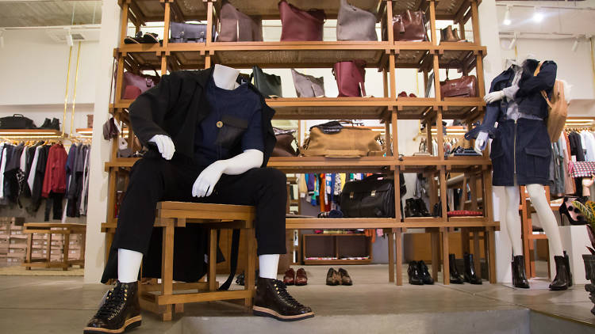
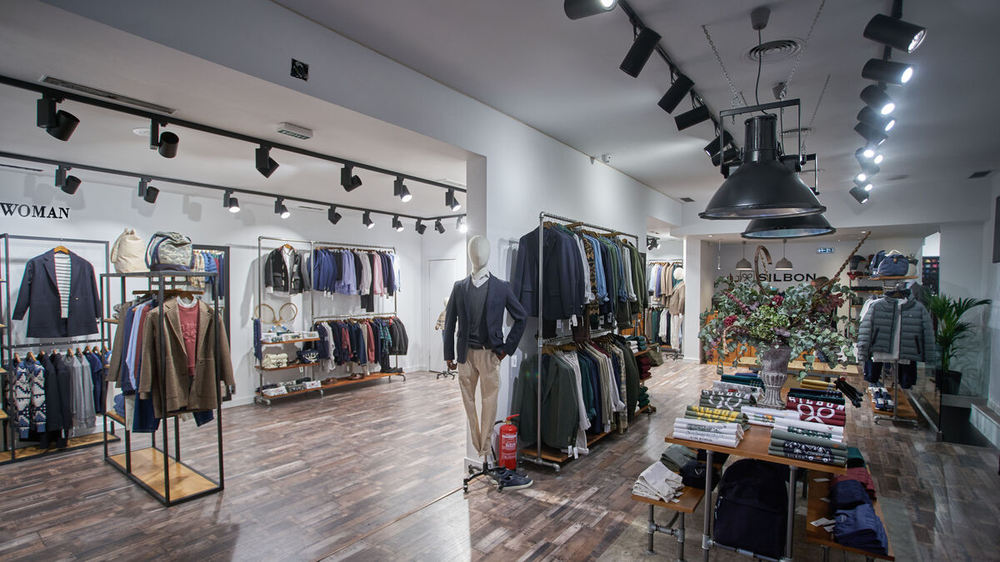
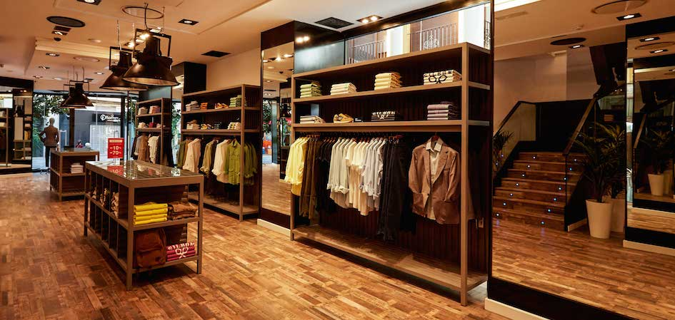

Inicio
Mas información
Donativos
tienda



¿QUE ES TAKE IT CLOTING?
La industria de la confección representa el 10% de las emisiones mundiales de carbono. La industria mundial de la moda genera una gran cantidad gases de efecto invernadero debido a la energía utilizada durante su producción, fabricación y transporte de los millones de prendas que se compran cada año
El impacto ambiental de la industria textil se extiende por todo su “ecosistema comercial”: desde la producción, distribución y exhibición hasta la adquisición, los procesos de cuidado y lavado y, finalmente, su desecho. Rogelio Omar Corona Núñez, académico de la Facultad de Ciencias de la UNAM, describe a la industria textil como un “sistema bastante complejo”, que durante el ciclo de producción recicla poco y explota combustibles fósiles. De entrada, anota el investigador, la extracción de materias primas conlleva un costo ambiental significativo; la siembra de algodón, por ejemplo, va de la mano con el uso de pesticidas y fertilizantes perjudiciales para el suelo. “Esto puede promover la degradación de los suelos y provocar un arrastre de sedimentos que contamina los cuerpos de agua”, apunta Corona Núñez. Y añade que el agua también se contamina durante el proceso de producción, para luego ser desechada en ríos y mares. Por otro lado, durante la producción se utiliza energía que se traduce en emisiones de CO2. Y, más allá de este proceso, el transporte de las prendas implica un consumo energético. Pero el problema no termina ahí. Cuando las prendas son expuestas en los aparadores de los centros comerciales, continúan generando un gasto energético.
A la vista de los impactos generados por la moda, han surgido distintos movimientos como son el de la moda sostenible o “slow-fashion”. Estos movimientos defienden un concepto de moda sostenible, la cual se basa en ropa con un bajo impacto ambiental. Para ello, utilizan fibras naturales orgánicas como el algodón, el cáñamo, el lino, el bambú, la seda o incluso fibras recicladas. También, se hacen cargo de que el transporte de las prendas tenga un impacto mínimo y que las condiciones laborales hayan sido adecuadas. Algunos ejemplos de las muchas marcas de ropa “slow-fashion” son: Re/Done, Noah, Olderbrother, Reformation, Mara Hoffman y Patagonia.
En conclusión, deberemos realizar compras más responsables, siendo recomendable conocer de dónde viene y cómo se produce el producto que vamos a comprar y, en la medida de lo posible, evitar hacer compras innecesarias.
De esto parte nuestro proyecto "TAKE IT CLOTING", ya que en conjunto con los demas equipos nuestra pagina habla respecto a la industria textil, con la finalidad de comercializarla y donarla. Ademas nosotros tambien nos enfocamos en informarles su calidad y su elaboracion, para ello creamos este sitio web para apoder informar a mas personas sin mucho esfuerzo.